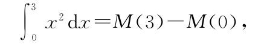
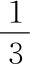
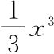
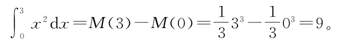

同以往一样，机器m（x）≡x2提供了一个简单的测试。我们来看一下，如果我们想知道（比如）x=0和x=3之间的面积，基本锤子会告诉我们什么：

其中M（x）是导数为x2的某台机器。我们能想到是什么机器吗？嗯，由于求导会让指数减1，因此应该类似＃x3。如果我们求导并将指数减1，最后需要得到x2，因此有（＃x3）'=3＃x2=x2，从而得到＃必须为

。因此M（x）=
是x2的反导数，这样我们就可以继续展开上面的等式，得到
有意思……这个特别的弯曲东西的面积刚好是整数。简单得让人心里没底。接下来我们该做什么？